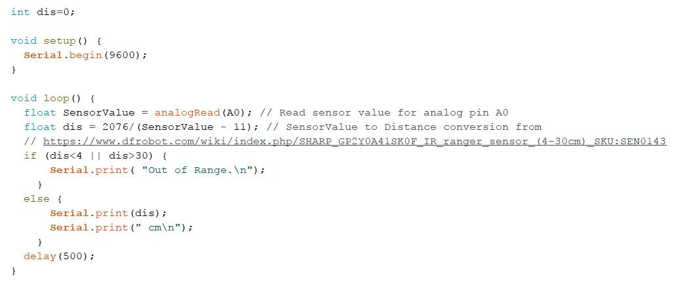
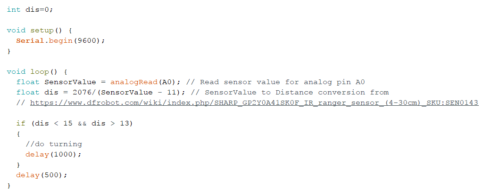
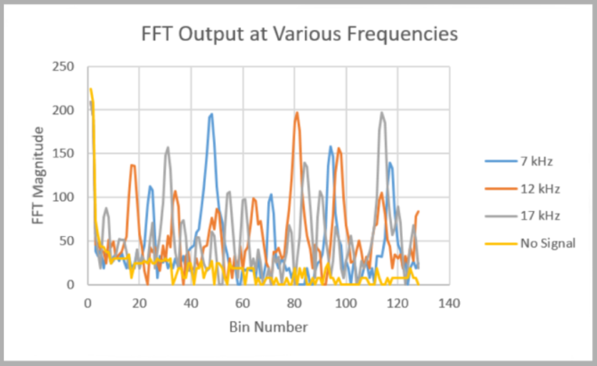
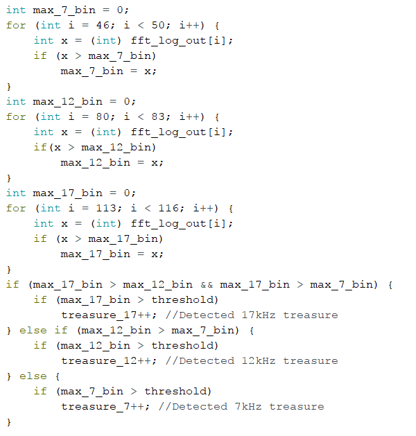
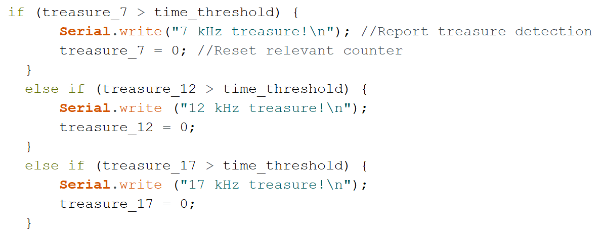

MILESTONE02
Objective
The purpose of this milestone was to add spice to the life of our robot with wall detection and differentiation between the three treasures.
Wall Detection
We need short range IR sensor SHARP 0A41SK to detect the distance between the sensor and the object.
Code to measure the distance between the wall and the robot:
The IR sensor performance can be analyzed from the video:

To detect the wall, we can change the code to the following:
Therefore, when the distance between the sensor on the robot and the wall falls into 13 to 15 cm range, the robot will turn left or right to avoid the wall and the distance measurments will delay longer to finish the turning.
Treasure Detection
In order to differentiate between the three frequencies of treasures, we needed to modify our FFT code from Lab 2 for optical detection. As a unit test, we first checked to see which bins corresponded to the different treasure frequencies.
Since our analog circuitry was still in progress, we had to rely on just our software to differentiate between the frequencies for this milestone. We were then faced with the problem of how to make our software sensitive enough to detect the treasure farther away, but also able to differentiate between the three frequencies of treasure. This resulted from harmonics in the FFT - when a treasure of one frequency triggered the sensor, there would also be a spike in the relevant bins of other frequencies.
We solved this problem by comparing the relevant bins and determining which frequency had the highest magnitude. If the maximum magnitude was greater than the threshold, we reported that the treasure was detected.
Here is our code for determining which frequency treasure the sensor detected:
This video shows detection of a single treasure, moving it in and out of range of our sensor:

We found, however, that using this method sometimes resulted in false detection of treasure. Our software was extremely sensitive and could not filter out noise. The program also misidentified some of the frequencies. To solve both of these problems, we decided to add time integration.
We checked to see whether treasure of the same frequency had been detected for several iterations. Only when our robot had detected the treasure for more iterations than our cycle threshold did it report a treasure being detected. We found that adding the cycle threshold enabled our robot to filter out noise as well as correctly identify the frequency of treasure each time.
Here is our code for time integration (Note: We did not reset the counters if the treasure of a particular frequency was not detected that iteration. We chose not to do this to keep the number of instructions low. We thought this was an acceptable trade off as our code worked correctly even without this reset):
The following video shows our code recognizing the correct treasure frequencies.

Looking Ahead
For our final robot, we plan to modify our treasure detection based on our final analog circuitry. We plan to add an op-amp as well as band pass filtering in order to amplify the output of the sensor and filter out noise. As a result, we will not have to make our software as sensitive, and we will be able to make it much more efficient.